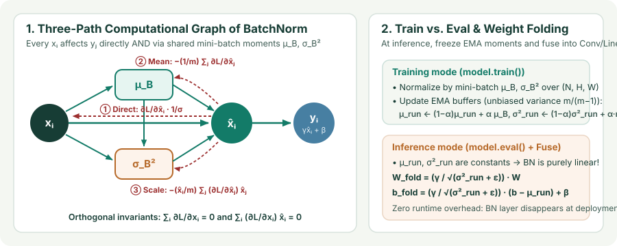

Batch Normalization: Forward Statistics, Running EMA Buffers, and the Exact Backward Pass
Derive per-channel mini-batch standardization over $(N,H,W)$, track running EMA statistics and zero-overhead Conv+BN weight folding, and derive the three-term orthogonal-projection backward gradient from first principles.
Batch Normalization (Ioffe & Szegedy, 2015) standardizes each feature channel across all examples in a mini-batch and all spatial locations, then restores representational flexibility with a learned per-channel scale $\gamma_c$ and shift $\beta_c$. Because every example $x_i$ contributes to the shared mean $\mu_B$ and variance $\sigma_B^2$, BatchNorm behaves differently during training and inference—and its backward pass must differentiate through both shared moments.
1. Forward pass over $(N,C,H,W)$ and parameter count
For a 4D convolutional activation tensor $X\in\mathbb R^{N\times C\times H\times W}$, BatchNorm operates independently on each channel $c\in\{1,\dots,C\}$ by pooling all $m = N\cdot H\cdot W$ values in that channel slice $\mathcal S_c = \{(n,c,h,w) : 1\le n\le N,\,1\le h\le H,\,1\le w\le W\}$. Dropping the channel subscript $c$ for readability and indexing the $m$ pooled scalars by $i\in\{1,\dots,m\}$:
Notice two immediate consequences:
- Exact standardization within every mini-batch: When $\varepsilon\to 0$, the normalized activations satisfy $\frac{1}{m}\sum_{i=1}^m \hat x_i = 0$ and $\frac{1}{m}\sum_{i=1}^m \hat x_i^2 = 1$ identically.
- Identity recovery: If the network needs the unnormalized distribution, it can set $\gamma = \sqrt{\sigma_B^2 + \varepsilon}$ and $\beta = \mu_B$. Across $C$ channels, BatchNorm stores $2C$ learnable parameters ($\gamma,\beta\in\mathbb R^C$, initialized to $\gamma=\mathbf{1},\beta=\mathbf{0}$) plus $2C$ non-trainable running buffers ($\mu_{\text{run}},\sigma_{\text{run}}^2\in\mathbb R^C$, initialized to $\mathbf{0},\mathbf{1}$).

2. Training vs. inference: running EMA buffers and Conv+BN weight folding
At inference time (`model.eval()`), predictions on a single test input $x$ must be deterministic and cannot depend on what other examples happen to share the batch, nor can a batch of size $m=1$ yield a meaningful sample variance ($\sigma_B^2 = 0$). Therefore, during training (`model.train()`), BatchNorm maintains exponential moving averages (EMA) of the channel mean and unbiased variance (with Bessel’s correction $\frac{m}{m-1}$):
where PyTorch uses momentum $\alpha = 0.1$ by default. During evaluation, BatchNorm replaces $(\mu_B,\sigma_B^2)$ with the frozen constants $(\mu_{\text{run}},\sigma_{\text{run}}^2)$:
Because $y_{\text{eval}}$ is a fixed affine function of $x = W_{\text{conv}} * h + b_{\text{conv}}$, we can fold (fuse) BatchNorm into the preceding convolution or linear layer for each output channel $c$ before deployment:
After folding, the BatchNorm layer is deleted completely from the inference graph—giving all the optimization benefits of BatchNorm during training at zero latency and memory-bandwidth cost in production.
3. Exact derivation of the BatchNorm backward pass
Given upstream gradients $g_i = \frac{\partial\mathcal L}{\partial y_i}$ for $i\in\{1,\dots,m\}$, the affine parameter gradients are immediate:
Now let $\sigma = \sqrt{\sigma_B^2 + \varepsilon}$. Why is $\frac{\partial\mathcal L}{\partial x_i}$ not simply $\frac{1}{\sigma}\frac{\partial\mathcal L}{\partial\hat x_i}$? Because changing $x_i$ also shifts $\mu_B$ and $\sigma_B^2$, which perturbs every $\hat x_j$ in the mini-batch! Applying the multivariable chain rule over the three paths in Figure 1:
- Gradient with respect to variance $\sigma_B^2$: Since $\hat x_j = (x_j - \mu_B)(\sigma_B^2 + \varepsilon)^{-1/2}$ and $\sqrt{\sigma_B^2+\varepsilon}\hat x_j = x_j - \mu_B$,
$$\frac{\partial\mathcal L}{\partial\sigma_B^2} = \sum_{j=1}^m \frac{\partial\mathcal L}{\partial\hat x_j}\left(-\frac{1}{2}(\sigma_B^2+\varepsilon)^{-3/2}(x_j - \mu_B)\right) = -\frac{1}{2\sigma^2}\sum_{j=1}^m \frac{\partial\mathcal L}{\partial\hat x_j}\hat x_j.$$
- Gradient with respect to mean $\mu_B$: Note that $\frac{\partial\sigma_B^2}{\partial\mu_B} = -\frac{2}{m}\sum_{j=1}^m(x_j - \mu_B) = 0$, so only the direct numerator path contributes:
$$\frac{\partial\mathcal L}{\partial\mu_B} = \sum_{j=1}^m \frac{\partial\mathcal L}{\partial\hat x_j}\left(-\frac{1}{\sigma}\right) + \frac{\partial\mathcal L}{\partial\sigma_B^2}\underbrace{\frac{\partial\sigma_B^2}{\partial\mu_B}}_{=\,0} = -\frac{1}{\sigma}\sum_{j=1}^m \frac{\partial\mathcal L}{\partial\hat x_j}.$$
- Combine all three paths into $\frac{\partial\mathcal L}{\partial x_i}$: Using $\frac{\partial\mu_B}{\partial x_i} = \frac{1}{m}$ and $\frac{\partial\sigma_B^2}{\partial x_i} = \frac{2}{m}(x_i - \mu_B) = \frac{2\sigma}{m}\hat x_i$:
$$\begin{aligned}\frac{\partial\mathcal L}{\partial x_i} &= \frac{\partial\mathcal L}{\partial\hat x_i}\frac{1}{\sigma} + \frac{\partial\mathcal L}{\partial\mu_B}\frac{1}{m} + \frac{\partial\mathcal L}{\partial\sigma_B^2}\frac{2\sigma}{m}\hat x_i \\[6pt] &= \frac{1}{m\sigma}\left(m\,\frac{\partial\mathcal L}{\partial\hat x_i} - \sum_{j=1}^m \frac{\partial\mathcal L}{\partial\hat x_j} - \hat x_i\sum_{j=1}^m \frac{\partial\mathcal L}{\partial\hat x_j}\hat x_j\right) \\[6pt] &= \frac{\gamma}{m\sqrt{\sigma_B^2+\varepsilon}}\left(m\,\frac{\partial\mathcal L}{\partial y_i} - \sum_{j=1}^m \frac{\partial\mathcal L}{\partial y_j} - \hat x_i\sum_{j=1}^m \frac{\partial\mathcal L}{\partial y_j}\hat x_j\right).\end{aligned}$$
In vector form, with unit-norm basis vectors $u_1 = \frac{1}{\sqrt{m}}\mathbf{1}$ and $u_2 = \frac{1}{\sqrt{m}}\hat x$ (which are orthogonal because $\mathbf{1}^\top\hat x = 0$), the Jacobian of BatchNorm is the scaled orthogonal projector onto $\operatorname{span}(\mathbf{1}, \hat x)^\perp$:
Any upstream gradient component that merely tries to shift the mean (along $\mathbf{1}$) or rescale the variance (along $\hat x$) is completely annihilated!
4. Worked numerical trace ($m = 4$)
Let $x = [1, 2, 5, 8]^\top$ ($m=4$), $\gamma = 1, \beta = 0, \varepsilon = 0$, and upstream gradient $g = \nabla_y\mathcal L = [1, 0, -1, 2]^\top$:
- Forward moments: $\mu_B = \frac{1+2+5+8}{4} = 4.0$, $\sigma_B^2 = \frac{(-3)^2+(-2)^2+1^2+4^2}{4} = \frac{9+4+1+16}{4} = 7.5$, and $\sigma = \sqrt{7.5} \approx 2.7386$.
- Normalized $\hat x$: $\hat x = \frac{1}{\sqrt{7.5}}[-3, -2, 1, 4]^\top \approx [-1.0954, -0.7303, 0.3651, 1.4606]^\top$.
- Backward reductions: $\sum_j g_j = 1 + 0 - 1 + 2 = 2$, and $\sum_j g_j\hat x_j = \frac{1(-3) + 0(-2) + (-1)(1) + 2(4)}{\sqrt{7.5}} = \frac{4}{\sqrt{7.5}} \approx 1.4606$.
- Three-term formula: Since $\hat x_i\sum_j g_j\hat x_j = \frac{4}{7.5}(x_i - 4)$,
$$\frac{\partial\mathcal L}{\partial x_i} = \frac{1}{4\sqrt{7.5}}\left(4g_i - 2 - \frac{4}{7.5}(x_i - 4)\right) = \frac{1}{4\sqrt{7.5}}\begin{bmatrix}4(1)-2-\frac{4}{7.5}(-3)\\[2pt]4(0)-2-\frac{4}{7.5}(-2)\\[2pt]4(-1)-2-\frac{4}{7.5}(1)\\[2pt]4(2)-2-\frac{4}{7.5}(4)\end{bmatrix} \approx \begin{bmatrix}+0.3286\\[2pt]-0.0852\\[2pt]-0.5964\\[2pt]+0.3530\end{bmatrix}.$$Check the two orthogonal invariants: the four entries sum to $+0.3286 - 0.0852 - 0.5964 + 0.3530 = 0$, and their dot product with $x - \mu_B = [-3,-2,1,4]^\top$ is $0$!
5. Small-batch failure modes, SyncBatchNorm, and Batch Renorm
| Failure Mode | Root Cause | Practical Fix |
|---|---|---|
| Small per-GPU batch size ($N\le 4$) | Monte Carlo variance of $\mu_B,\sigma_B^2$ grows as $O(1/N)$; error rates on ResNet-50 jump sharply below $N=8$ | Use nn.SyncBatchNorm across GPUs, or replace BN with GroupNorm (Ch. 04) |
| Train–test distribution shift | During training each sample is normalized using its mini-batch peers; at eval it uses global EMA $(\mu_{\text{run}},\sigma_{\text{run}}^2)$ | Batch Renormalization (Ioffe, 2017) bounds $(r,d)$ corrections, or use batch-free LayerNorm / GroupNorm |
| Contrastive / info-leakage cheating | Shared mini-batch statistics leak information across positive/negative pairs on the same GPU (e.g., MoCo, SimCLR) | Shuffle BN across GPUs, SyncBN, or switch to LayerNorm |
6. Questions worth answering
It equals zero everywhere ($\nabla_x\mathcal L = 0$)! Because BatchNorm removes any constant shift and any positive rescaling on the forward pass, directional derivatives along $\mathbf{1}$ and along $\hat x$ are identically zero.
eval() mode (`FrozenBatchNorm2d`) even during fine-tuning?Object detectors typically fit only $1\text{–}2$ high-resolution images per GPU. Updating $\mu_B,\sigma_B^2$ and the EMA buffers with noisy 2-image statistics corrupts the pretrained ResNet representation; freezing $(\mu_{\text{run}},\sigma_{\text{run}}^2)$ turns BN into a stable per-channel affine layer.
Sources
Ioffe and Szegedy, Batch Normalization: Accelerating Deep Network Training by Reducing Internal Covariate Shift (ICML 2015); Ioffe, Batch Renormalization: Towards Reducing Minibatch Dependence in Batch-Normalized Models (NeurIPS 2017).